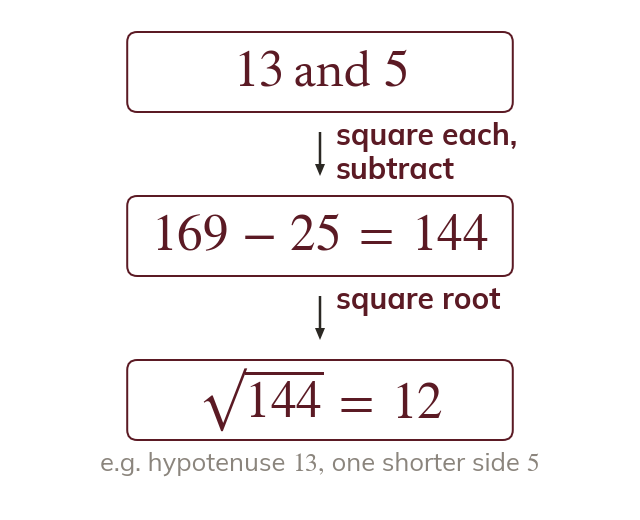
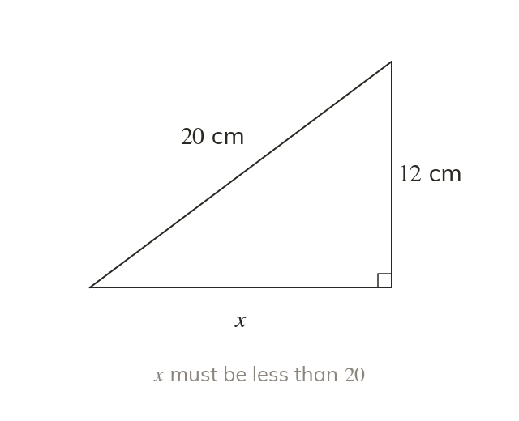
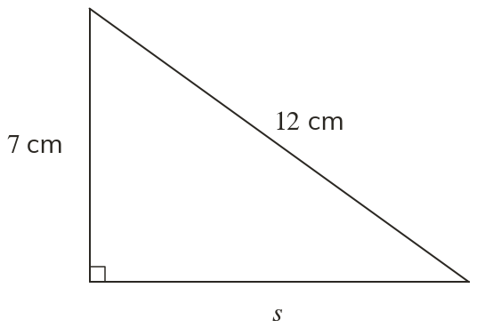
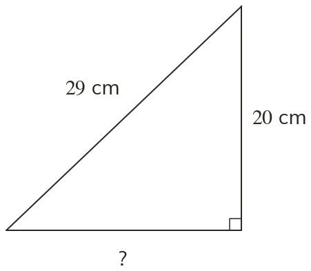
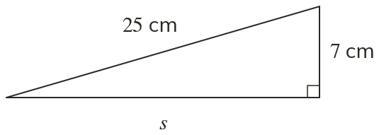
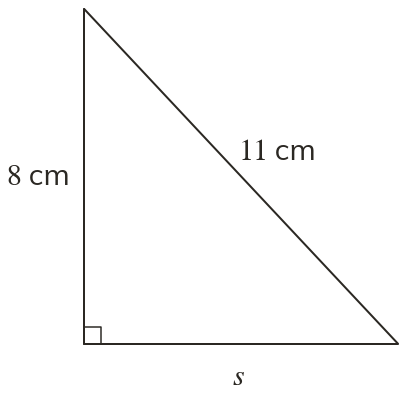
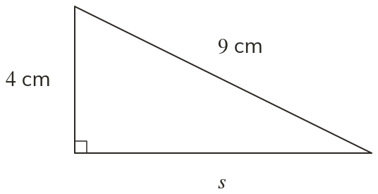
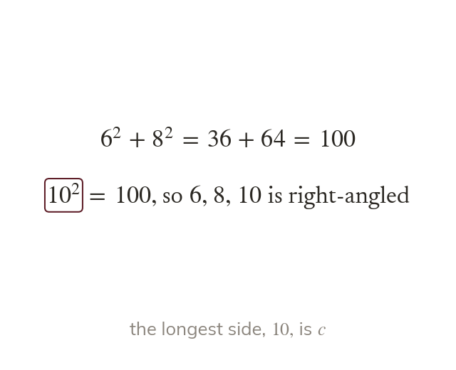
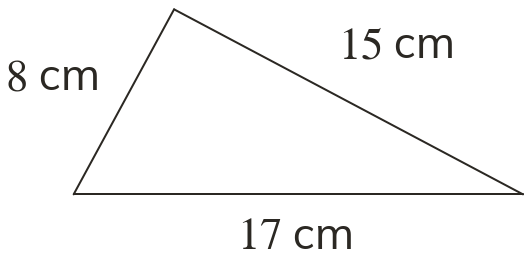
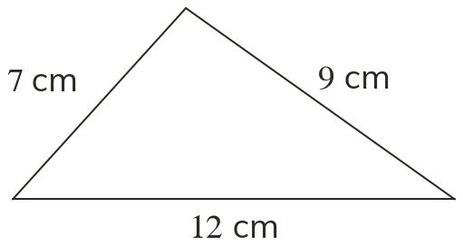

A ladder of known length, or a ramp whose sloping length is known: often the longest side is the one you are given. Then the theorem is run backwards.
By the end you’ll know…
Rearranging for a shorter side gives so the two squares are SUBTRACTED, not added.
Which of the two operations is needed is decided by whether the unknown side is the hypotenuse or one of the shorter sides.
A shorter side must come out smaller than the hypotenuse, and that is the check on the answer.
By the end you can
G5Calculate a shorter side of a right-angled triangle from the hypotenuse and the other shorter side.
G5Decide whether a triangle with three given side lengths is right-angled by testing whether
Work down the page at your own pace. Write every answer in your book first, then click to check it.
01
Do Now
About 5 minutes
1
Work out squared, and the square root of
and
2
Make the subject of
3
The shorter sides of a right-angled triangle are cm and cm. Find the hypotenuse.
cm
Remember these?
LAST LESSONWhich side of a right-angled triangle is always the longest?
The hypotenuse, opposite the right angle
LAST WEEKI think of a number, double it and add to get : find the number.
LAST TERMWork out
LAST YEARHow many faces, edges and vertices does a cuboid have?
faces, edges and vertices
02
Learn
Read each card, then follow the worked examples one step at a time.

When the hypotenuse is known
With the hypotenuse known, subtract squares: The squares are subtracted, not added.
If the hypotenuse is known, a shorter side is found by subtracting squares: The squares are subtracted, not added.

Decide first, then check
Find the hypotenuse first, to decide whether to add or subtract. A shorter side must come out smaller than the hypotenuse.
WORKED EXAMPLE A
The hypotenuse is cm and one shorter side is cm. Find the other side.
Subtract the squares
Square each
Square root
Other side cm
WORKED EXAMPLE B
The hypotenuse is cm and one shorter side is cm. Find the other side to d.p.

Subtract the squares
Square each
Square root
Round to d.p. cm
YOUR TURN · a
The hypotenuse is cm and one shorter side is cm. Find the other side.
cm
YOUR TURN · b
The hypotenuse is cm and one shorter side is cm. Find the other side to d.p.
so cm
03
Check your understanding
Pick an answer. If it's wrong, the feedback tells you which mistake it was.
Which calculation finds the missing side?

Not quite. You know the hypotenuse, so subtract:
Not quite. Square first, then subtract:
Yes. Hypotenuse squared minus the other side squared, then square root.
Not quite. That's the side squared. One more step: square root.
Find

Yes. and cm.
Not quite. A shorter side can't be longer than Subtract:
Not quite. is Square root it: cm.
Not quite. Square first, then subtract:
Find to d.p.

Not quite. A shorter side can't be longer than Subtract:
Not quite. is Square root it: cm.
Not quite. Square first, then subtract:
Yes. and cm.
04
Practise
mark as you go
Checkpoint. A right-angled triangle has hypotenuse cm and one shorter side cm. Find the other side. Then find it when the hypotenuse is cm and one shorter side is cm, to d.p.Show your teacher before you go on
1
The hypotenuse is cm and one shorter side is cm. Find the other side.
cm
2
The hypotenuse is cm and one shorter side is cm. Find the other side to d.p.
cm
3
Find to d.p.

cm
4
The hypotenuse is m and one shorter side is m. Find the other side.
m
5
The hypotenuse is cm and one shorter side is cm. Find the other side to d.p.
cm
EXT
In a right-angled triangle one shorter side is twice the other, and the hypotenuse is cm. Find the two shorter sides to d.p.
so and cm; cm
05
Learn
Read each card, then follow the worked examples one step at a time.
A test, not a calculation
To test whether a triangle is right-angled, square all three sides. It is right-angled exactly when the two smaller squares add to the largest.

The longest side is c
The longest side is always the one tested as c. Testing a shorter side as c gives the wrong verdict.
The longest side is always the one tested as c. Testing with a shorter side as c makes a right-angled triangle look as if it is not.
WORKED EXAMPLE C
Is a triangle with sides cm, cm and cm right-angled?

Square the shorter two
Square the longest
Right-angledYes, as
WORKED EXAMPLE D
Is a triangle with sides cm, cm and cm right-angled?

Square the shorter two
Square the longest
Right-angledno, as is not
YOUR TURN · c
Is a triangle with sides cm, cm and cm right-angled?
so yes
YOUR TURN · d
A triangle has sides cm, cm and cm. Is it right-angled?
is the longest: so yes
06
Check your understanding
Pick an answer. If it's wrong, the feedback tells you which mistake it was.
Is a triangle with sides cm, cm and cm right-angled?
Yes. so yes, it's right-angled.
Not quite. The longest side, must be c. Test against
Not quite. Square first: against
Not quite. Use the longest side as c:
Is a triangle with sides cm, cm and cm right-angled?
Not quite. The longest side, must be c. Test against
Yes. but so it's not right-angled.
Not quite. Square first, and "close" isn't enough. Test against
Not quite. The longest side, must be c. Test against
A triangle has sides cm, cm and cm. Which test is right?
Not quite. The longest side, must be c:
Not quite. Square first, then compare:
Not quite. The longest side, must be c:
Yes. The two shorter sides squared add to the longest squared:
07
Practise
mark as you go
Checkpoint. Is a triangle with sides cm, cm and cm right-angled? Then test a triangle with sides cm, cm and cm.Show your teacher before you go on
1
Is a triangle with sides cm, cm and cm right-angled?
so yes
2
Is a triangle with sides cm, cm and cm right-angled?
so no
3
Is a triangle with sides m, m and m right-angled?
so yes
4
Is a triangle with sides cm, cm and cm right-angled?
Longest is : so yes
5
Is a triangle with sides cm, cm and cm right-angled?
so no
EXT
A triangle has sides cm, cm and cm. Find both values of that make it right-angled, to d.p. where needed.
the hypotenuse: so the hypotenuse: so
08
Exit ticket
On paper, on your own, then check
1
When the hypotenuse is known, do you add or subtract the squares to find a shorter side, and how do you check the answer?
Subtract; the shorter side must be smaller than the hypotenuse
2
The hypotenuse is cm and one shorter side is cm. Find the other side.
cm
3
Is a triangle with sides cm, cm and cm right-angled?
so yes
Finished? Next lesson: 10.9.3 Pythagoras in Context.
Practise more
After the lesson, or whenever you want more
Dr Frost
Log in, then search for a code to practise that skill.
288bUse Pythagoras' theorem to calculate a shorter side of a right-angled triangle.
288cDetermine if a triangle is right-angled or if it is possible to construct (converse of Pythagoras' theorem).